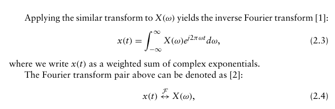
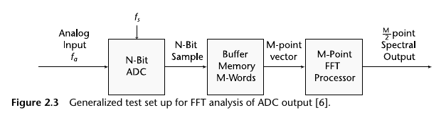
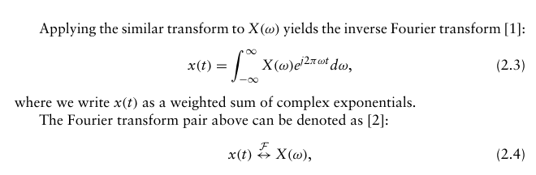
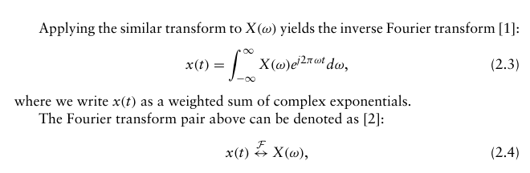

Converts signal representation from time-domain to frequency domain
Fourier Transform
Fourier Series
Discrete Fourier Transform (DFT)
Fast FT (FFT) and the inverse FFT (IFFT) are specific implementations of this
Discrete Time Fourier Transform
ω = 2*π*frequency

How to calc definite integral: https://www.mathsisfun.com/calculus/integration-introduction.html
Signal Period and Windows
The discrete FT views a sample set as
a periodic signal (repeating infinitely) even
though its just a fixed set of samples, so window functions
need to be applied BEFORE applying FFT
Fast Fourier Transform (FFT)
FFT Setup. M is the fft size (number of input samples),
point spacing is fs/M, frequency range is DC to fs/2 (fs = sample rate)

The FFT output can be used like an analog spectrum analyzer to measure the
amplitude of the various harmonics and noise components of a digitized signal. The
harmonics of the input signal can be distinguished from other distortion products
by their location in the frequency spectrum
Decimation
Decreasing the number of samples by ignoring samples between sample
points. Need to be careful not to decrease so much that you fall
below the Nyquist rate (2*frequency)
Interpolation
Increasing the number of samples by inserting zeros between samples
 
